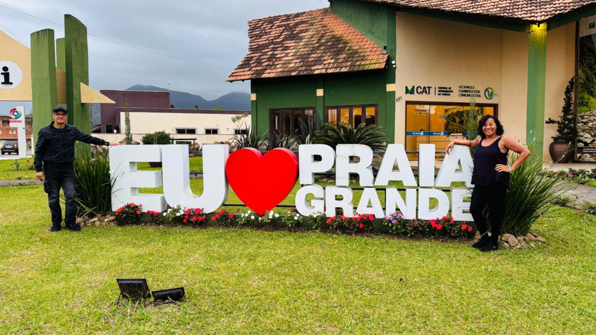
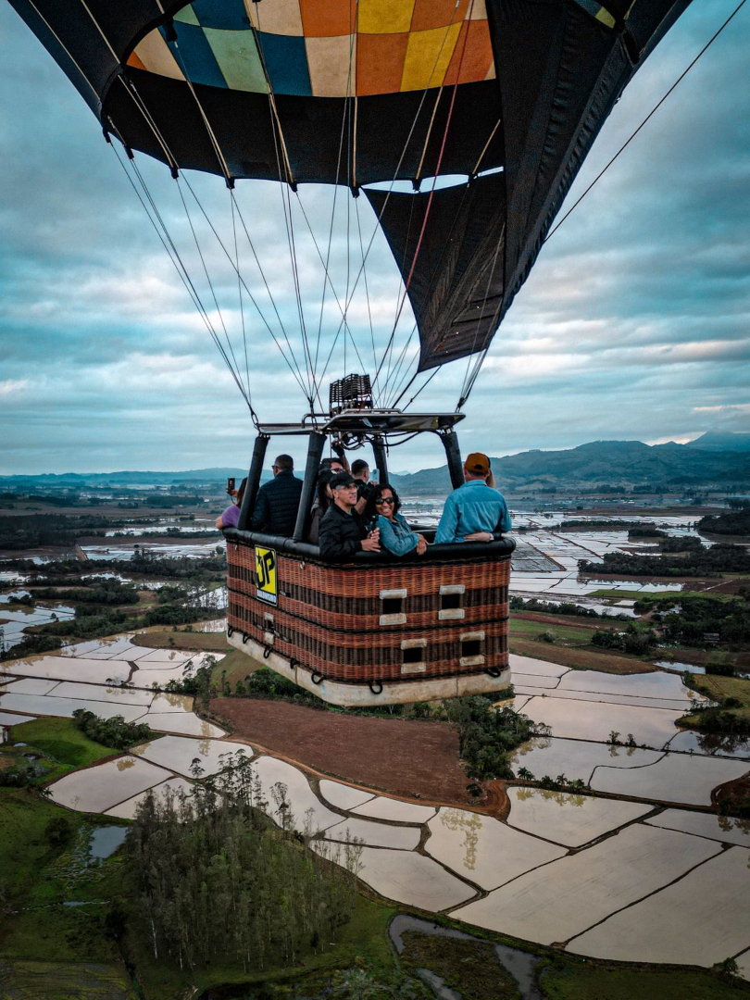
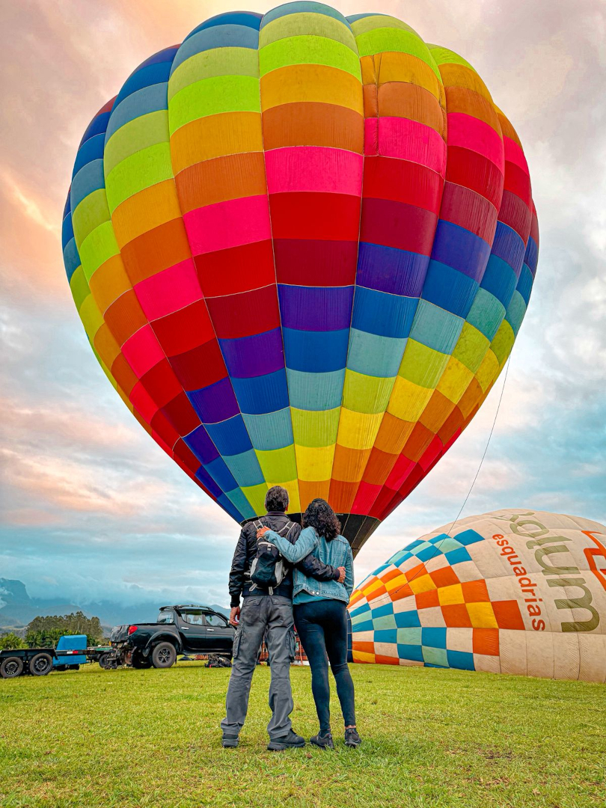
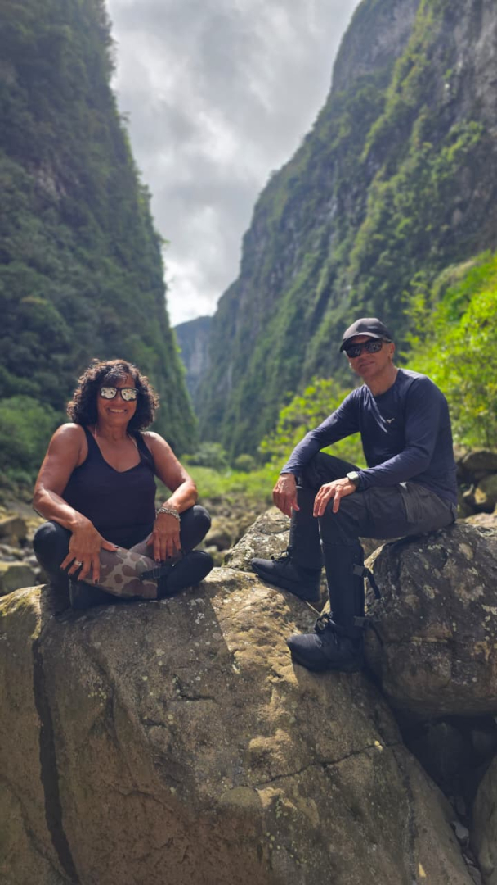
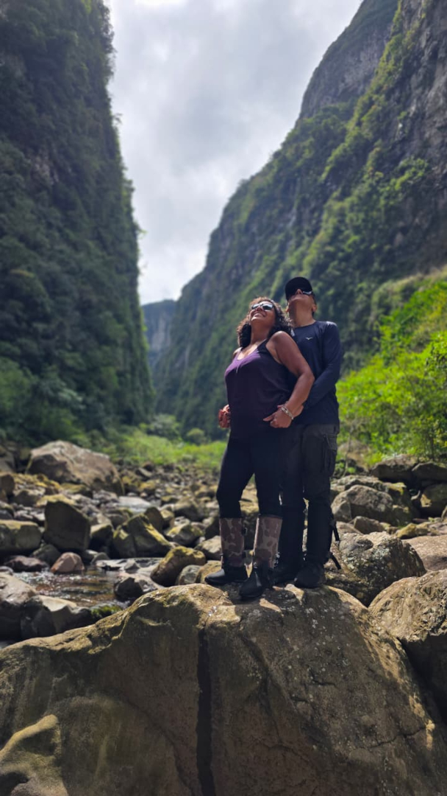
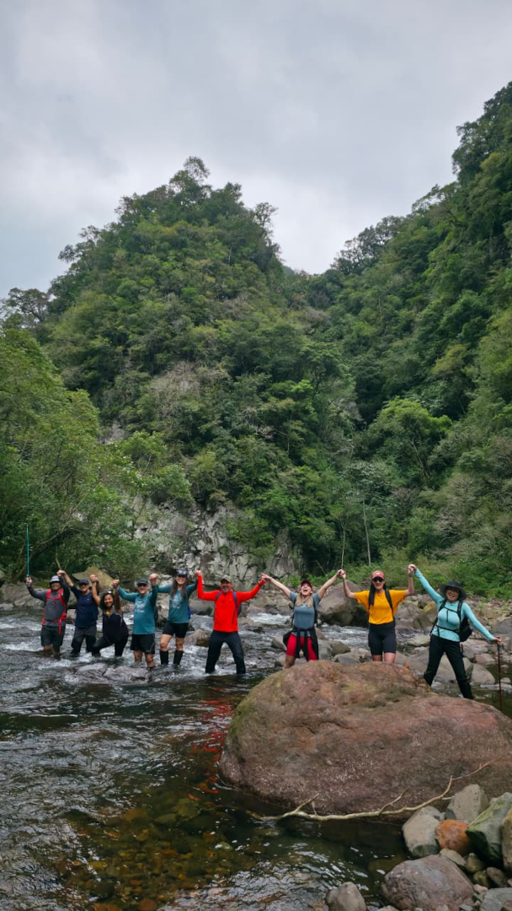
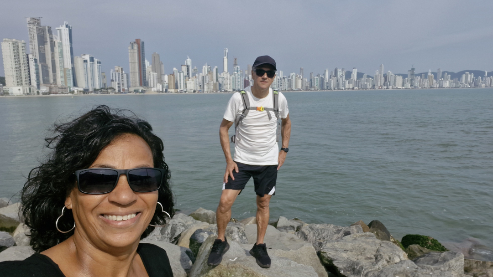
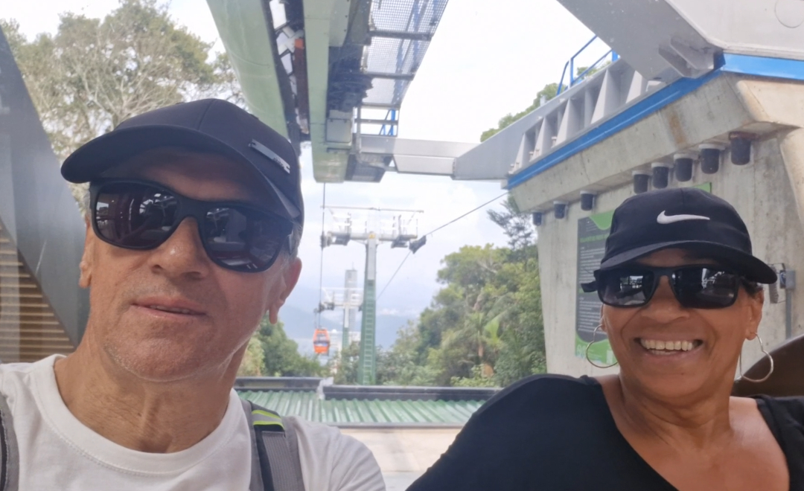
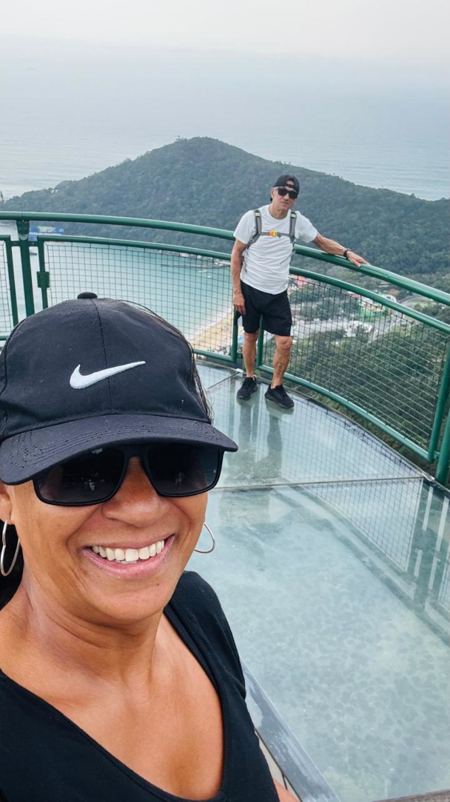
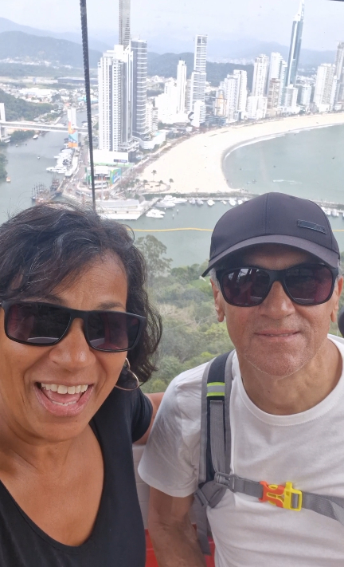

Embora Torres seja conhecida como a capital do balonismo brasileiro, foi em Praia Grande que escolhemos fazer nosso passeio de balão. Queríamos ver o Cânion Itaimbezinho, mas a serra estava encoberta por um forte nevoeiro.

Mesmo com o tempo nublado, o passeio foi maravilhoso. A visão do horizonte era limitada, mas lá do alto podíamos apreciar um impressionante mosaico do solo, preparado para o plantio de arroz.

Um momento de expectativa.

Sem dúvida, é uma das melhores trilhas que já fizemos. Localizada dentro do Cânion Itaimbezinho, no Parque Nacional de Aparados da Serra, na divisa entre Santa Catarina e Rio Grande do Sul, a trilha segue pelas margens do Rio do Boi, em um percurso de cerca de 14 quilômetros (ida e volta), proporcionando vistas incríveis a cada passo.

Durante o percurso, é possível observar paredões gigantescos, cachoeiras escondidas e o Rio do Boi serpenteando pelo cânion. A cada curva, surgem novas vistas espetaculares, com paredões que chegam a 700 metros de altura.

Durante a caminhada cruzamos o rio por 9 vezes com muitas pedras escorregadias, correnteza forte e água fria, contudo ainda aproveitamos para mergulhar na água gelada.

Para finalizar nossa viagem, passamos por Balneário Camboriú. A ideia era ficar por dois dias, mas o tempo não colaborou. Nos hospedamos em um hotel e, logo após chegar, saímos em busca de um lugar para almoçar. No dia seguinte, a previsão era de tempestade, então ficamos apenas até por volta da uma hora da tarde.

Antes de embarcar no teleférico, fomos avisados de que talvez não fosse possível retornar por ele devido ao vento.

Apesar do vento forte e do tempo nublado, a vista lá de cima é espetacular.

Durante a descida, a tempestade já se aproximava, e o teleférico balançava com força.